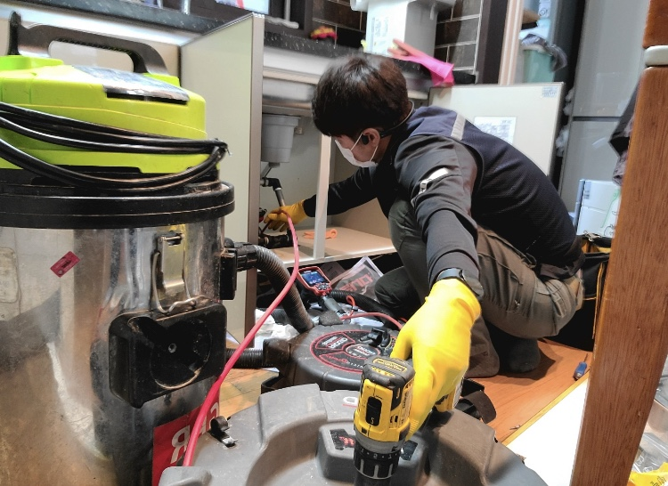
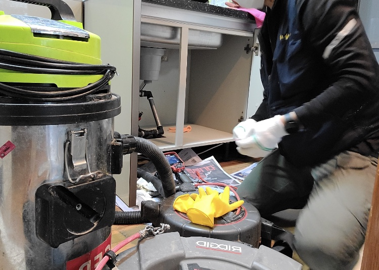
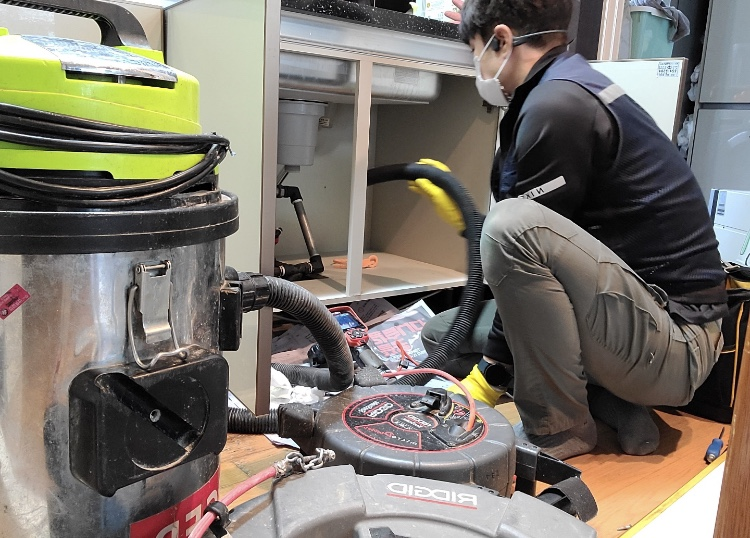
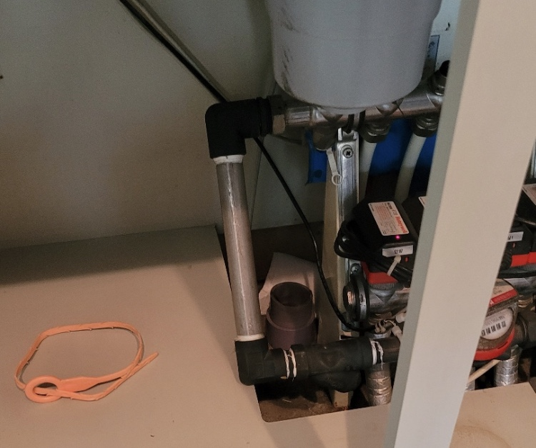
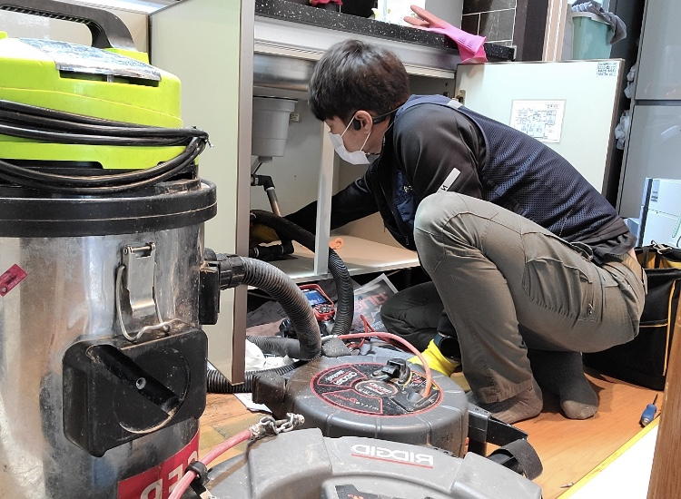
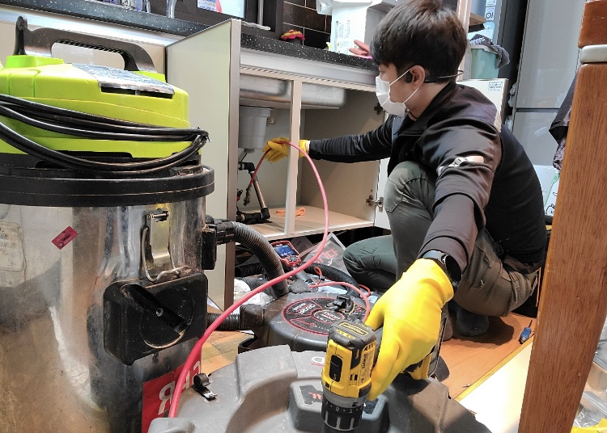
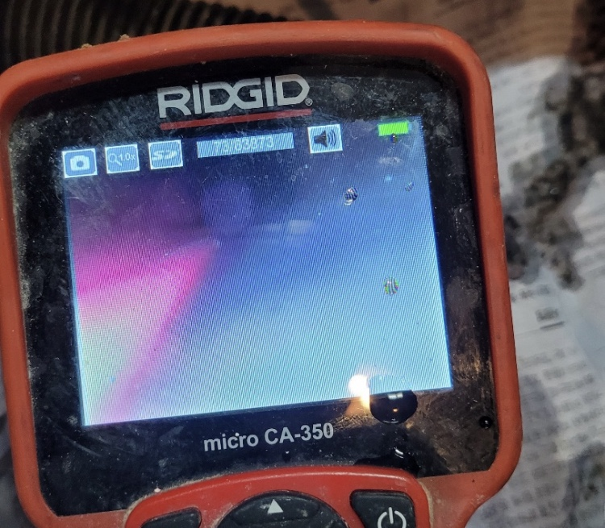

🏠 동탄싱크대막힘은 하수구막힘에서 해결하세요
화성 싱크대막힘 전문 시공 후기

📋 작업 개요
- 위치: 화성
- 서비스 유형: 싱크대막힘, 하수구막힘, 배관막힘, 뚫는업체, 고압세척
- 작업 일시: 2022. 2. 8. 22:06
- 업체명: 하수구수사대 (010-5615-2118)
🔍 문제 상황
동탄싱크대막힘은 동탄하수구막힘에서
안녕하세요
"하수구 수사대" 입니다
우리가 일상적으로 음식을 할 때 사용하는 곳은
싱크대 이죠 하지만 만일 하수구가 막히게 된다면
음식을 하기가 어려운 상황이 될 수도 있는데요
여기서 알아두셔야 할 점이 하나 있습니다
하수구는 그냥 물이 흘러가는 곳이니 신경을 많이
쓰지 않아도 된다고 생각하시는 분들이 많은데요
그렇기에 관리가 소홀히 되어 하수구배관에
기름 슬러지가 쌓여 막히게 되어서 배관에서
악취가 올라오는 경우가 매우 많습니다
동탄싱크대막힘 "하수구막힘"
동탄 하수구막힘에서
하수구 막힘의 원인은 매우 다양한데요 그 중

🔎 원인 분석
💡 전문가 진단: 슬러지와 이물질이 통로를 꽉 막고 있어 배수가 불가능하며, 정밀 타격 및 배관 세척이 동반되어야 해결 가능합니다.
기름슬러지가 대표적이고 다음으로 석회,시멘트.폼,
행주, 수세미 등등 다양한 원인이 있습니다
그렇기에 오래된 노하우와 최첨단 장비를 갖춘
업체에게 연락을 해야 하는데요 어디가 좋을까요?
서울/경기/인천 (수도권전지역)전지역
출장이 가능하고 주말,공휴일도 출장이 가능한 곳이
언제 어느때나 연락하기 좋기때문에
이런 모든 점이 가능한
동탄싱크대막힘 전문 업체인 '하수구막힘'으로
연락 한통만 주신다면 언제 어디서나 방문하겠습니다
하수구가 막히는 이유는 보통 배관이 길고 구배가 좋지
않아 물이 고여있는 구간에 슬러지가 많이 쌓이며
막히게 되는데요 이것은 관리를 통해 예방은 가능하지만 잘 보이지도 않는 배관을 관리한다는 것은 매우
쉽지않다는게 일반적이기에 막힘증상이 일어납니다
이런 막힌 하수구를 뚫는 방법은 여러가지가 있는데

🔧 작업 과정
예를 들자면 석션,스프링,플렉스샤프트,고압세척 등등 다양한 방법들이 있습니다 흔히 많이 알고 있는 장비는
전동스프링인데요 매우 효과적인 장비입니다
또한 , 배관을 살필때 사용이 되는 내시경카메라장비도 여러가지가 있는데요 가격에 따라 성능차이가 있기에
어려운 배관일수록 고가의 장비가 투입됩니다
다행히도 저희 동탄싱크대막힘 업체 '하수구막힘'은
항상 최첨단장비들로 수리를 도와드리고 있습니다
자주 막히는 하수구일수록 내시경 카메라를 통해
정확한 원인을 알아내야 꼼꼼하고 완벽한 수리가
가능하기 때문에 내시경 카메라가 없다면
원인을 완벽히 해결하기는 어려울수 있습니다
저희 동탄싱크대막힘 업체인 '하수구막힘'은
배관에 구멍을 내고 작업을 하기도 하는데요
간혹 작업을하다 이물질이 배관밖으로 넘칠수 있어
보양작업을 철저히 하여 주변을 지저분 하지 않게
깔끔하게 작업을 하는 것이 매우 중요합니다
그렇기 때문에 항상 작업의 마무리는 내시경카메라로
작업이 깔끔하게 잘 되었는지 체크해보는 것이
앞으로의 막힘을 예방하는데 도움이 됩니다
그렇기에 반드시 전문가의 도움을 받아야합니다
오늘은 동탄싱크대막힘 업체인 '하수구막힘'의
싱트대 막힘 현상 해결방법에 대해 알아보았는데요
당일 방문으로 빠른 해결을 도와드리고 있는데요
그렇기 때문에 빠른 시간내에 작업이 완료됩니다
뿐만 아니라 , 문제가 생길시 작업 후에


✅ 작업 완료
1년동안 AS가 가능하기 때문에 언제든
연락하시면 바로 방문하도록 하겠습니다
전화번호:010-2340-2118
경기도 화성시 노작로 147 601-B234호
#하수구 #하수구막힘 #싱크대 #싱크대막힘 #동탄
#동탄하수구막힘 #엄체




⚠️ 주방 싱크대 배관 막힘 예방 수칙
- ✅ 기름기가 묻은 식기나 프라이팬은 설거지 전 키친타올로 반드시 기름때를 닦아내세요.
- ✅ 주기적으로 싱크대 개수대에 뜨거운 물을 가득 받아 한 번에 내려 배관 내부 기름을 씻어내세요.
- ✅ 배수구 거름망을 미세한 필터로 사용하시고 음식물 찌꺼기가 틈으로 새어 들지 않게 관리하세요.
- ✅ 베이킹소다와 식초를 뜨거운 물과 함께 일주일에 한 번씩 부어주면 배관 살균과 막힘 예방에 좋습니다.
💡 핵심 정리
- 확실한 장비 작업(내시경 점검 및 샤프트 스케일링)으로 원인을 뿌리 뽑습니다.
- 작업 후 1년 이내에 동일한 부위 재발 시 100% 무상 A/S 서비스를 보장합니다.
- 서울 · 경기 · 인천 전 지역에 24시간 언제든 긴급 출동할 수 있도록 항시 대기 중입니다.
❓ 자주 묻는 질문 (FAQ)
🚨 화성 싱크대막힘 문제로 고민이신가요?
정확한 원인 진단과 확실한 시공으로 재발 없는 해결을 약속드립니다.
24시간 긴급 출동 | 서울 · 경기 · 인천 전지역 | 1년 내 재발 시 무상 A/S